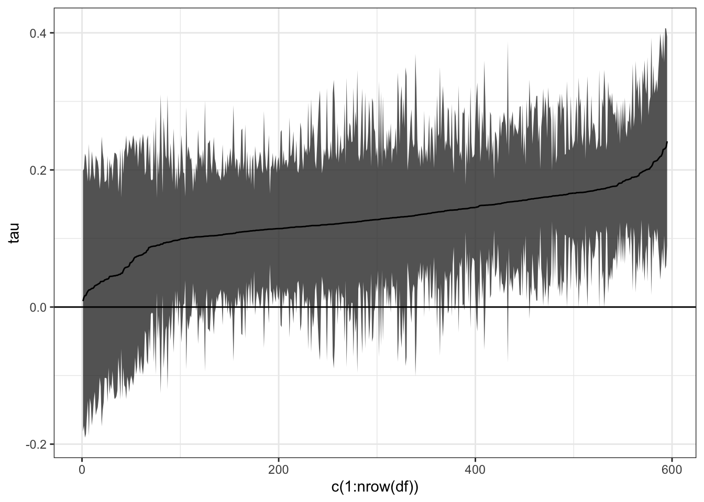

Chapter 5 条件付き平均効果関数の推定
5.1 問題設定
条件付き平均差関数 \(\tau(d,d',x)=E[Y_i|D_i=d,X_i=x]-E[Y_i|D_i=d',X_i=x]\) を推定
大きく２種類の推定戦略を紹介
パラメトリック な近似モデル: \(\tau(d,d',z)\) の有限のパラメータからなる近似モデルを推定
前章の周辺化平均もこの一種: \(\tau(d,d',x) \approx \beta\) として近似
線形モデル \(\tau(d,d',x) \approx \beta_0 + \beta_1X_1+...+\beta_LX_L\) で近似
どちらの場合であっても信頼区間を計算可能
ノンパラメトリック モデル: 教師付き学習によりノンパラメトリックに推定
一般に信頼区間の計算が困難
Causal Forest algorismは例外的に漸近正規性に基づく信頼区間の近似計算を提供
5.2 パッケージ
library(tidyverse)
library(AER)
library(recipes)
library(grf)
library(rpart)
library(rpart.plot)5.3 データ
data("PSID1982")
set.seed(123)
Y <- PSID1982$wage |> log() # 結果変数
D <- if_else(PSID1982$occupation == "white",1,0)
X <- recipe(~ education + south + smsa + gender + ethnicity + industry + weeks,
PSID1982) |>
step_other(all_nominal_predictors(),
other = "others") |>
step_unknown(all_nominal_predictors()) |>
step_indicate_na(all_numeric_predictors()) |>
step_impute_median(all_numeric_predictors()) |>
step_dummy(all_nominal_predictors()) |>
step_zv(all_numeric_predictors()) |>
prep() |>
bake(PSID1982)
X <- as.matrix(X)
set.seed(123)5.4 Casual Forest
Causal Forest (Wager and Athey 2018; Athey et al. 2019) を基盤とした推定方法を紹介
- \(\tau(X)\) は以下の一般化された部分線形モデルで定義
\[E[Y|D,X]=\tau(X)\times D + f(X)\]
- Random Forest をベースに \(\tau(X)\) の近似関数を推定
fit <- regression_forest(X = X,
Y = Y)
Y.hat <- predict(fit)$predictions
fit <- regression_forest(X = X,
Y = D)
D.hat <- predict(fit)$predictions
fit.CF <- causal_forest(X = X,
W = D,
Y = Y,
Y.hat = Y.hat,
W.hat = D.hat,
num.trees = 4000
)5.5 Best linear predictors
線形近似モデル \(\tau(x)\approx \beta_0 + \beta_1X_1+...+\beta_LX_L\) を推定
\(X\) はscale関数によって標準化
- \(\beta_0\) を”平均効果”として解釈可能
best_linear_projection(fit.CF,scale(X))##
## Best linear projection of the conditional average treatment effect.
## Confidence intervals are cluster- and heteroskedasticity-robust (HC3):
##
## Estimate Std. Error t value Pr(>|t|)
## (Intercept) 0.19596292 0.07019857 2.7916 0.005416 **
## education 0.08618803 0.07001161 1.2311 0.218796
## weeks 0.06479440 0.05452998 1.1882 0.235222
## south_yes -0.05390008 0.05280003 -1.0208 0.307753
## smsa_yes -0.06226340 0.06482436 -0.9605 0.337202
## gender_female 0.00019173 0.03808792 0.0050 0.995985
## ethnicity_afam -0.06304902 0.04463958 -1.4124 0.158362
## industry_yes -0.07646084 0.06049545 -1.2639 0.206764
## ---
## Signif. codes: 0 '***' 0.001 '**' 0.01 '*' 0.05 '.' 0.1 ' ' 15.6 Distribution of predicted individual effects
一般にノンパラメトリック モデルでは、信頼区間計算が難しい
- \(X\) の数が少ないCausal forestでは “例外”的に計算可能
df <- mutate(PSID1982,
tau = predict(fit.CF,
estimate.variance = TRUE)$predictions,
sd = predict(fit.CF,
estimate.variance = TRUE)$variance.estimates |> sqrt())
df |>
arrange(tau) |>
ggplot(aes(x = c(1:nrow(df)),
y = tau,
ymin = tau - 1.96*sd,
ymax = tau + 1.96*sd)
) +
geom_ribbon(alpha = 0.8) +
geom_line() +
geom_hline(yintercept = 0) +
theme_bw()
References
Athey, Susan, Julie Tibshirani, Stefan Wager, et al. 2019. “Generalized Random Forests.” Annals of Statistics 47 (2): 1148–78.
Wager, Stefan, and Susan Athey. 2018. “Estimation and Inference of Heterogeneous Treatment Effects Using Random Forests.” Journal of the American Statistical Association 113 (523): 1228–42.